fintech_chart()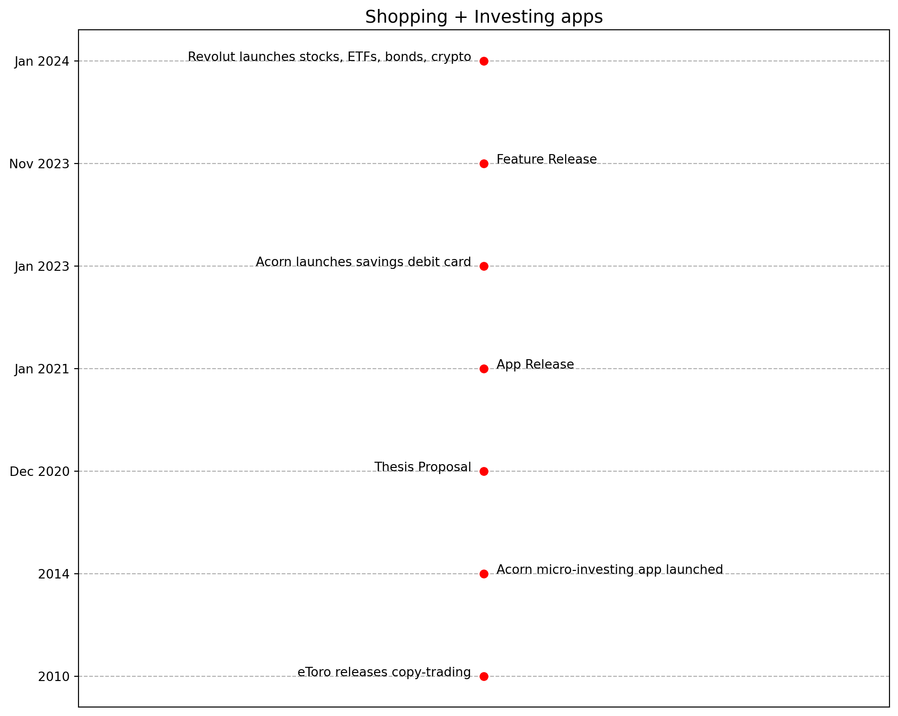
Fintech (financial technologies) holds the potential to drive consumers on a pathway towards ESG (Environmental, Social, and Corporate Governance) investing. The extent to which this funnel works - and it’s indeed a complex, multi–step funnel - depends on curbing greenwashing to a level that allows consumers to distinguish eco–friendly businesses from the heavy polluters - and delivering a simple UX (user experience).
This chapter explores the larger trend of Democratization of Financial Markets through consumer-facing applications that enable new user interactions which increasingly blur boundaries between shopping, saving, and investing (SSI). The efforts to boost user numbers have driven apps that started out with only payments-focused businesses - such as Revolut and N26 - branch out into offering savings accounts and investing options. Regardless of if it’s money spent on shopping or money saved and invested, these are all financial decisions of capital allocation, and in one way or another, we’re giving our money to companies for continued economic growth. The critical question is: do we choose to support sustainability-focused companies that invest deeply into green innovation and eco-friendly practices - or those that pay less attention to sustainability?
Consumers are beginning to become more money-savvy yet are still missing many key concepts from financial literacy. Giving users exposure to investment opportunities through familiar activities like shopping may have the potential to boost financial literacy levels and entice consumers to learn more about taking advantage of their opportunities financial markets - as well as how to manage the types or risk involved.
Shopping, saving, and investing are converging on digital platforms (superapps) that permeate our daily financial lives, with features such basic banking, payments, transfers, as well as reward and cashback programs (Rakuten), round-up to next dollar with automated micro-investing (e.g. Acorn, Stash, Swedbank), and retail investing (Robinhood, Public) and copy-trading (eToro) into various (fractional shares of) stocks, derivatives like CFDs and futures, microloans (Kiva), commodities and precious metals such as gold and silver (Revolut), physical assets such as real estate, land, forest and digital assets such as cryptocurrencies, NFTs, and other alternative assets.
Money is becoming more diverse and the meaning of money itself is changing. We have the fiat money created by governments by law, using central banks, which loan money to commercial banks. And we also have new types of money created by companies and individuals using cryptographic blockchain-based distributed databases, which keep track of transactions (who-paid-whom). Whatever the method of creation, in essence, money is a system of trust where something is used as a medium of value exchange and accepted by other people as payment. Digital money in it’s various forms connects industries on the same apps, which make investing more accessible and socially engaging, appealing to younger people who are active in social media and online shopping.
Trend of sustainably, how can sustainability become more accessible? People want to shop, save, and invest sustainably - how to do it?
fintech_chart()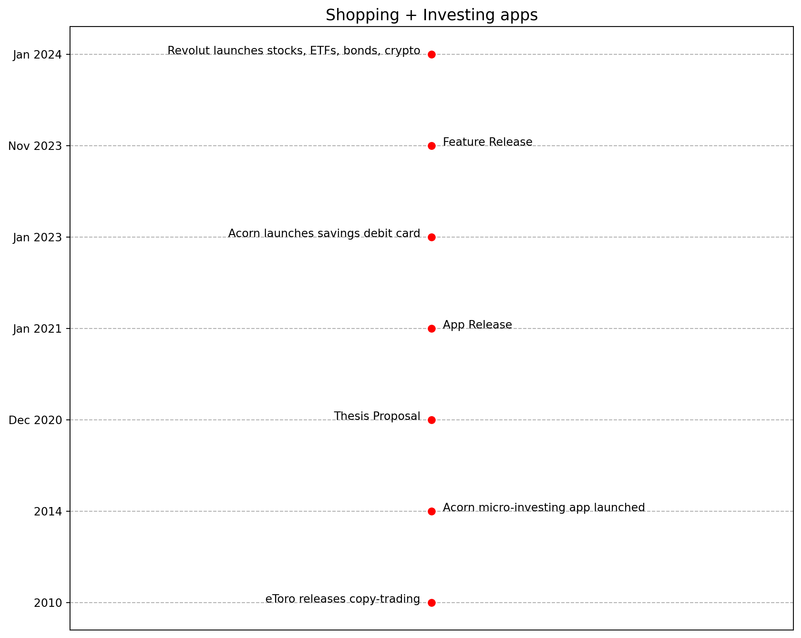
Legislation is Catching Up With Fintechs. Legislation sets higher standards.
Directive 14 2014/65/EU, 2014: The European Union fully recognizes the changing financial landscape trending towards the democratization of investments: “more investors have become active in the financial markets and are offered an even more complex wide-ranging set of services and instruments” (European Parliament, 2014). Some key legislation for investors has been put in place recently, for example “MiFID II is a legislative framework instituted by the European Union (EU) to regulate financial markets in the bloc and improve protections for investors” (Kenton, 2020). MiFID II and MiFIR will ensure fairer, safer and more efficient markets and facilitate greater transparency for all participants” (European Securities and Markets Authority, 2017).
Already in 2001, while still part of the EU, the UK government was discussing ways to promote sustainable investment “fundamental changes in VAT or corporation taxes could be used to promote greener consumption and investment” (House of Commons, 2002). More recently, (HM Treasury, 2020) released a taxonomy of sustainable activities in the UK.
Campain to ban polluting products campaign success story, EU shops can’t sell deforestation products gathered over 100 thousand online signatures (Anon, 2022c). Legislation banning products contributing to deforestation was passed by the EU Parliament and Council in 2023 and came into effect in July 2024 (European Parliament, 2023; Abnett & Abnett, 2024)
While the above trend is for governments to adapt to and work towards their environmental climate commitments and public demand, the sovereign risk remains an issue. For example, in the U.S. the policies supported by President Donald Trump during his presidency ran counter to many sustainability recommendations, including those directed at the financial markets, helping legacy industries stay competitive for longer through subsidies, and lack of regulation, or even regulation supporting legacy technologies (Quinson, 2020).
(PWC, 2020) Changes to laws and regulations aimed at achieving climate change mitigation is a key driver behind the wave of ESG adoption. The goal of these laws, first adopted in the European Union, a self-proclaimed leader in eco-friendliness, is to pressure unsustainable companies to change towards greener practices, in fear of losing their access to future capital, and to create a mechanism forcing entire environmentally non-compliant business sectors to innovate towards sustainability unless they want to suffer from financial penalties. On the flip side of this stick and carrot fiscal strategy, ESG-compliant companies will have incentives to access to cheaper capital and larger investor demand from ESG-friendly investors.
Double Eleven 11/11 celebrated on November 11th is the world’s largest shopping festival (時代財經, 2023). In June 2023, 526 million people watch e-commerce live-streams in China; online bargaining is a type of ritual (Liu, House & Kádár, 2024).
It may seem impossible to turn the tide of consumerism, given the projected growth in online shopping (Forrester, 2024)
shopping_growth()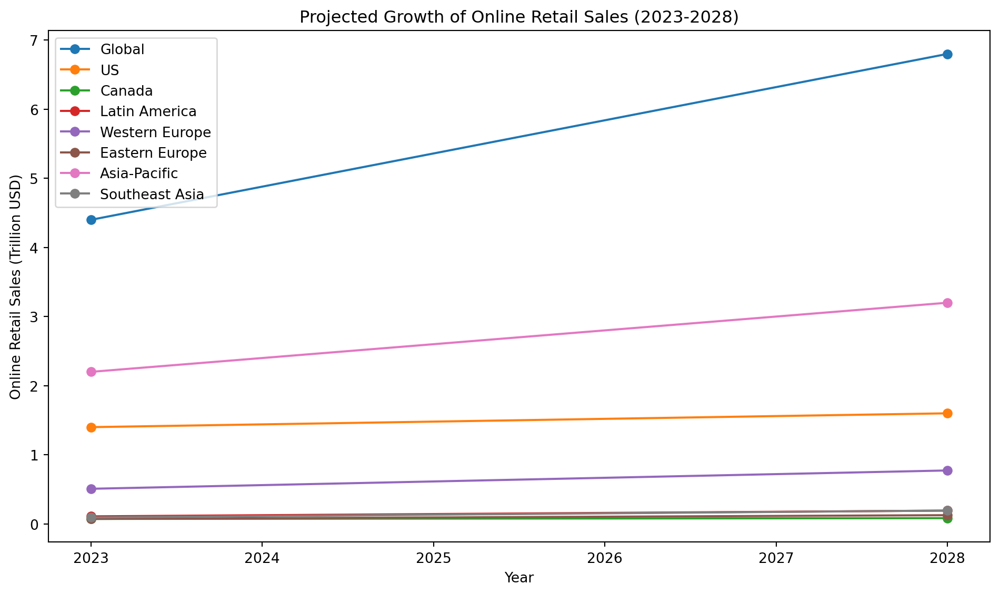
Igini (2022) Online Shopping impact. Single’s day, etc.
“Asia is set to account for 50% of the world’s total online retail sales”
Conscious consumers make up a small percentage of the entire consumer public. (Milne, Villarroel Ordenes & Kaplan, 2020) coins the term mindful consumers, who do research and are aware of the impact of their shopping choices.
Consume pressure to advance ESG regulatory standards to add a baseline ESG dynamic pricing of risk like climate, mandatory climate disclosures, carbon pricing knowing your supply chain, analyze supply chain risk
Is Sustainable Shopping possible? “Learn to notice so we can preserve”, “Õpetame märkama, et oskaksime hoida”. “Consumers have increasing power. Where we put our money reinforces certain types of businesses, as conscious consumers we can vote with our dollars. How can we do it？ Sustainable brands, ESG, etc, etc. Pushing highers Standards and choose companies that adopt circular design” What is the consumer CO2 contribution? What is the target?
Sustainable Consumerism via Self-Regulation. 2M EUR project for the shopping app. (Klinglmayr, Bergmair & Pournaras, 2016)
Make use of indexes to compare companies.
For consumer activism to become mainstream it needs to much simpler.
Banks and Fintechs Capture User Data. Payments are an Entry Point and Source of Consumer Action Data, Shopping Data. Payments is the primary way consumers use money. Is there a funnel From Payments to Investing? ESG Shopping is about Changing our relationship with money. Make commerce more transparent. Current shopping is like having a one-night stand. you barely know the name of your company. You don’t know much about their background. Building consumer feeling of ownership, create meaningful connections between producers and consumers.
Payments is one way consumers can take individual climate action. In the words of a Canadian investment blogger, “every dollar you spend or invest is a vote for the companies and their ethical and sustainability practices” (Fotheringham, 2017). The combination of consumption and investment is an access point to get the consumer thinking about investing. Even if the amount are small, they are a starting point for a thought process.
Digitalisation of payments creates lots of Point of Sale (PoS) data that’s valuable to understand what people buy. Banks have access to each person’s financial habits which makes it possible to model sustainable behavior using big data analysis. Asian markets have shown the fastest growth in the use of digital payments (McKinsey, 2020).
In Taiwan, O Bank makes use of Mastercard’s data to calculate each transaction’s CO2 emissions and offer Taiwanese clients “Consumer Spending Carbon Calculator” and “Low-Carbon Lifestyle Debit Card” products (Anon, 2022e). Mastercard has developed a service that banks can offer consumers sustainability reports (Mastercard, 2021). Similarly, Commons, formerly known as Joro, an independent app, analyses your personal financial data to estimate your CO2 footprint (Chant, 2022).
A Dutch fintech company Bunq offers payment cards for sustainability, provided by MasterCard, which connects everyday payments to green projects, such as planting trees and donations to charities within the same user interface (Bunq, 2020). At the same time this can be considered greenwashing as Bunq only plants 1 tree per every €1,000 spend with a Bunq card. The example marketed at students cites 8 trees planted this month while students scarcely would have €8,000 to spend every month.
Sharing a similar goal to Alibaba’s Ant Forest, Bunq’s approach creates a new interaction dynamic in a familiar context (card payments), enabling customers to effortlessly contribute to sustainability. However, it lacks the level of gamification which makes Alibaba’s offering so addictive, while also not differentiating between the types of purchases the consumer makes, in terms of the level of eco-friendliness.
In Nigeria, (Emele Onu & Anthony Osae-Brown, 2022) reports how in order to promote the eNaira digital currency use, the Nigerian government limited the amount of cash that can be withdrawn from ATMs “In Nigeria’s largely informal economy, cash outside banks represents 85% of currency in circulation and almost 40 million adults are without a bank account.” [E-Naira find papers]
In Kenya, M-Pesa started since 2007 for mobile payments, used by more than 80% of farmers (Tyce, 2020; Parlasca, Johnen & Qaim, 2022). Using digital payments instead of cash enables a new class of experiences, in terms of personalization, and potentially, for sustainability.
In Sweden, point of sales (PoS) lending is a common practice, and one of the reasons for the success of Klarna, the Swedish banking startup, which has managed to lend money to more consumers than ever, through this improved user experience. Taking out loans for consumption is a questionable personal financial strategy at best. If people can loan money at the point of sales, why couldn’t there be 180 degrees opposite service - point of sales investing? And there is, called “round-up apps”. Next Generation Customer Experience (n.d.) suggests “Targeted at millennials, Acorns is the investing app that rounds up purchases to the nearest dollar and invests the difference.” - and example of From Shopping to Investing.
Many banks have started offering a service to automatically save and invest tiny amounts of money collected from shopping expenses. Every purchase one makes contributes a small percentage - usually rounded up to the nearest whole number - to one’s investment accounts. For example, Swedbank (2022), the leading bank in the Estonian market, offers a savings service where everyday payments made with one’s debit card are rounded up to the next Euro, and this amount is transferred to a separate savings account. Similarly, the Estonian bank LHV (2020) offers micro-investing and micro-savings services, with an interesting user experience innovation showing how for an average Estonian means additional savings of about 400€ per year.
While the financial industry is highly digitized, plenty of banks are still paper-oriented, running digital and offline processes simultaneously, making them slower and less competitive, than startups. Indeed, the new baseline for customer-facing finance is set by fintech, taking cues from the successful mobile apps in a variety of sectors, foregoing physical offices, and focusing on offering the best possible online experience for a specific financial service, such as payments.
Banks and Fintech are becoming more similar than ever. 39% of Millenials are willing to leave their bank for a better fintech (n=4,282); innovation in payments helps retention (PYMNTS, 2023). The European Central Bank describes fintech as improving the user experience across the board, making interactions more convenient, user-friendly, cheaper, and faster. “Fintech has had a more pronounced impact in the payments market […] where the incumbents have accumulated the most glaring shortcomings, often resulting in inefficient and overpriced products,” Yves Mersch, Member of the Executive Board of the ECB says in European Central Bank (2019).
There are also people who are concerned with digital payments. There are concerns digital currencies also help to “democratize financial surveillance”. China was a money innovator introducing paper money in the Tang Dynasty (618-907 AD) (Anon, n.d.h). Jeff Benson (2022) “use the e-CNY network to increase financial surveillance.” Anon (2023b) Digital currencies make tracking easier. Yahoo Finance (2022): WeChat, Alipay, vs digital yuan by Eswar Prasad. Anon (2023c) in Macau Contactless Payments are prevalent.
There are many neobanks, or challenger banks, far too many to list. The table only includes a small sample of banks and the landscape is even larger if one includes the wider array of fintechs. Neo-banks often use sustainability marketing.
The following popular (totaling millions of users) robo-advisory apps combine sustainability, personalization, ethics, and investing however, they are mostly only available on the US market.
| Service | Features | Availability |
| Goodments | Matching investment vehicles to user’s environmental, social, ethical values | USA |
| Wealthsimple | AI-assisted saving & investing for Millennials | USA, UK |
| Ellevest | AI-assisted robo-advisory focused on female investors and women-led business | USA |
| Betterment | AI-assisted cash management, savings, retirement, and investing | USA |
| Earthfolio | AI-assisted socially responsible investing | USA |
| Acorns | AI-assisted micro-investing | USA |
| Trine | Loans to eco-projects | USA |
| Single.Earth | Nature-back cryptocurrency | Global |
| Grünfin | Invest in funds | EU |
| M1 Finance | Finance Super App | US |
| Finimize | Investment research for anyone | US |
| NerdWallet | Financial clarity all in one place | US |
| Tomorrow Bank | Green Banking | EU |
| Marcus Invest | Robo-Advisor | US |
| Chipper | Digital cash app for African markets | Africa |
| Lightyear | Simple UI for Stocks, ETFs, interest from Estonia | EU |
| Ziglu | UK simple investing app | UK |
| Selma | Finnish investing app | EU |
| Monzo | Bank | UK |
| Nubank | Bank | Brazil |
| EToro | Investing and copy-investing | EU |
| Revolut | From payments to investing | UK, EU |
| Mos | Banking for students | US |
| Robinhood | Investing | US |
| Mintos | Buy bonds and loans | EU |
Does Individual Climate Action Matter?
Buy Now Pay Later (BNPL) is the biggest consumer payments / financing success story innovated by Klarna in Sweden in 2005 and Afterpay in Australia in 2015 but with roots in Layaway Programs created during the 1930’s US Great Depression (Kenton, 2023). By 2021, 44.1% of Gen-Z in the US had used BNPL according to (EMarketer, 2021). Gen-Z mostly use BNPL to buy clothes (LHV, 2024).
There are two ways to look at sustainable saving. This section is going to look at savings in the financial sense of the word. Savings in the sense of CO2e emission and environmental cost reductions have an entire separate chapter dedicated to them titled ‘sustainability’ however a short definition might be valuable here as well.
Environmental Savings means “the credit incurred by a community that invests in environmental protection now instead of paying more for corrective action in the future” (see Yale Center for Environmental Law & Policy, 2018) and (Anon, n.d.aa:p.33).
Saving precedes investing. From building loyalty to building ownership, the first step towards investing is to start saving money. How to encourage savings in daily life and make it a part of the everyday payments experience? Even starting with a small step, gathering a small target amount per month for savings, has the potential to shift the user’s way of thinking about money. The second step, choosing where to invest these savings, will help us begin thinking like an investor. To start noticing trends and looking into how finance shapes the world.
People will only save nature if it also saves money.
Nerdwallet’s Tommy Tindall (2023) suggests making financial commitments instead of resolutions.
Savings and investing are conflated because the large majority of savings that people have are invested by their banks. Thus the question of sustainable savings comes one of where exactly are they invested and what is the impact of that investment of sustainability.
Savings are the money one has in a pension fund or managed by themselves. For the majority of people, savings are invested by the bank and make up the largest proportion on investments for the people who are not active investors themselves.
Ethical Savings (Anon, 2023d)
Money in a “Safe” place: Money anthropomorphism increases saving behavior (Wang, Kim & Zhou, 2023).
Mobile money users are better at saving (Naito, Ismailov & Kimaro, 2021).
Design Implication: make saving money look like an avatar or piggy bank or smth.
help consumers save money and business increase repeat business. Building customer loyalty is a key part of repeat business and financial predictability for any company. Large consumer brands like Starbucks have for long ran successful rewards programs that encourage customers to come back (Steinhoff & Zondag, 2021). Could loyalty schemes create a pathway to investing in the company to a strengthen the feeling of connection with the business even further? After all, I’m now a minority owner! Yet in practice, many consumers lack the financial literacy for investing and there are many legislative difficulties for turning loyalty points into investments. It’s easier instead to create a separate cryptocurrency or token program which users could collect and redeem for some benefit.
Patagonia “Worn Wear” program
H&M “Garment Collecting” program
The Body Shop “Return, Recycle, Repeat”
Loyalty schemes can take a physical form. In Malaysia, Beebag shopping bags made of recycled plastic bottles with a NFC ship that works in conjunction with an app to provide rebates for customers (The Green Factor, 2022).
By the latest estimates sustainability lacks several trillions of USD in investment. Even with massive financing already in the pipeline, the estimate for the global financing gap for low-carbon energy production was 5.2 trillion USD as of 2016 (Anon, 2016; Earth Day, 2023). Ray Dalio puts the needed climate investment at $5T and believes these financial goals won’t be met (Ray Dalio, 2023). A newer United Nations Environmental Programme (UNEP) calculation lowered the world needs an additional 4.1 Trillion USD of financing in nature-based solutions by 2050 to meet climate change, biodiversity, and land degradation reduction targets (UNEP, 2022).
According to (The Rockefeller Foundation, 2022) a slightly lower 2.5-3.2 Trillion USD would be sufficient.
climate_finance_gap_sectors_timeline()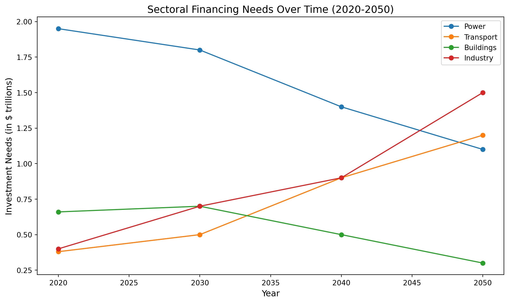
What if 10% of annual consumer spending – ten percent is about $2,8T - went towards protecting our climate? The theme for the 2023 Earth Day was “Invest In Our Planet”.
climate_finance_gap_sectors()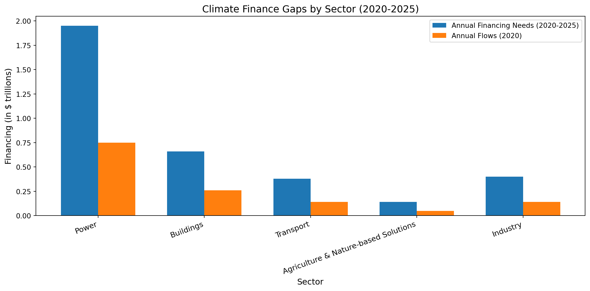
The needed investment doesn’t seem so large, around 5% of the global GDP, if one compares it to the per year Global Gross Domestic Product (GDP) estimated at around 100 Trillion USD in 2022 and growing to 105 Trillion USD in 2023 (Aaron O’Neill, 2023; IMF, 2023). In essence, the estimated total investment gap in climate fits into the economic growth of 1 year of the global economy.
Bad news. It would be easier for large institutional investors to move their money to sustainable assets than for retail investors to move their relatively small investments.
The lack of funding in green energy especially affects emerging economies (Anon, 2022d). “We can and must channel private capital into nature-based solutions. This will require policy and regulatory support, catalytic capital and financial innovation” argued the CEO Green Finance Institute, Dr Rhian-Mari Thomas, ahead of COP27 in Egypt (Anon, 2023f). It’s not happening fast enough.
money_chart()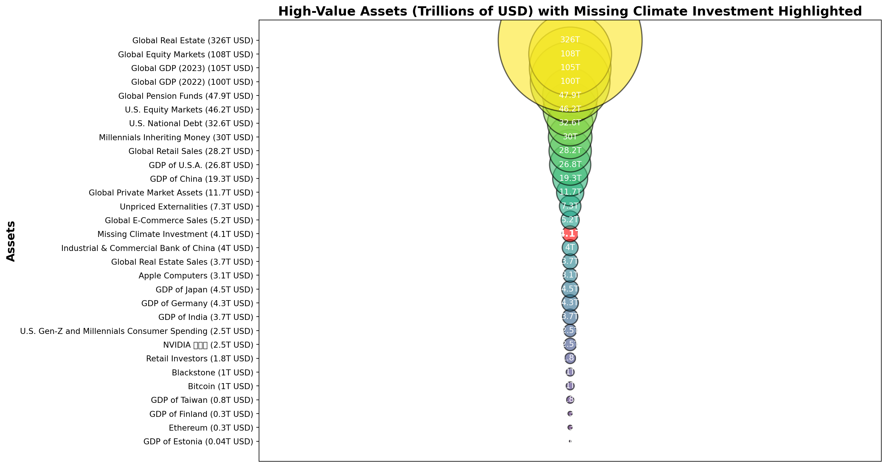
| High-Value Assets (Trillions of USD) | |
|---|---|
| Global Real Estate (2020, valuation) | $326T |
| Global Equity Markets (2023, valuation) | $108T |
| Global GDP (2024, estimated) | $110T |
| Global GDP (2023, per year) | $105T |
| Global GDP (2022, per year) | $100T |
| Global Pension Funds (2023, valuation) | $47.9T |
| U.S. Equity Markets (2023, valuation) | $46.2T |
| U.S. National Debt (2023, valuation) | $32.6T |
| Millennials Inheriting Money from Parents in the U.S., U.K. and Australia (2022-2032) | $30T |
| Global Retail Sales of Goods and Services to Consumers (2023, per year) | $28.2T |
| GDP of U.S.A. (2023, per year) | $26.8T |
| GDP of China (2023, per year) | $19.3T |
| Global Private Market Assets (2023, per year) | $11.7T |
| Unpriced Externalities (2023, per year) | $7.3T |
| Global E-Commerce Sales (2021, per year) | $5.2T |
| Missing Climate Invesment (2022, total) | $4.1T |
| Industrial & Commercial Bank of China (2019, total assets) | $4T |
| Global Real Estate Sales (2021, per year) | $3.7T |
| Apple Computers (2024, market value) | $3.1T |
| GDP of Japan (2023, per year) | $4.5T |
| GDP of Germany (2023, per year) | $4.3T |
| GDP of India (2023, per year) | $3.7T |
| U.S. Gen-Z and Millennials Consumer Spending (2022, per year) | $2.5T |
| NVIDIA 英偉達 (2024, market value) | $2.5T |
| Retail Investors (2023, liquid assets) | $1.8T |
| Blackstone (2023, total assets) | $1T |
| Bitcoin (2024, market cap) | $1T |
| GDP of Taiwan (2023, per year) | $0.8T |
| GDP of Finland (2023) | $0.3T |
| Ethereum (2024, market cap) | $0.3T |
| Individual Climate Investors (2020, per year) | $0.1T |
| GDP of Estonia (2023, per year) | $0.04T |
While these assets and GDP values reflect different aspects of the global economy, the comparison illustrates that redirecting a relatively small fraction of global wealth and economic activity towards sustainable investments can close the investment gap. This perspective should inspire confidence that the goal is achievable with coordinated effort and policy support.
Robeco survey of 300 large global investors totaling $27T under management found biodiversity-protection is increasingly a focus-point of capital allocation (Robeco, 2023).
Compliance and GenAI in banking: (Rahul Agarwal et al., 2024).
“Lessons from banking to improve risk and compliance and speed up digital transformations” (Jim Boehm et al., 2021).
OECD (2024) projects steady economic growth 3.1% in 2024 and 3.2% in 2025 while the World Bank & World Bank (2024) is more conservative projecting 2.6% and 2.7% respectively.
While literature has been debating if it’s possible to “do well while doing good”, latest research suggests it’s possible to make investments that both make an attractive financial return and adhere to sustainability goals. Tan, Szulczyk & Sii (2023)
“sustainable investing is now part of mainstream financial strategy” Morgan Stanley (2019)
“Sustainable development requires more investment in sustainable companies and less in unsustainable firms.” (Van Zanten & Rein, 2023).
Young investors are typically retail investors investing small amounts of money for themselves. (Unless they have inherited wealth or are among the very few who work in an institution such as an investment firm, university endowment, pension fund or mutual fund, and have a say in where to invest large amounts of other peoples’ money.)
Retail investors face many challenges in comparison with their institutional counterparts. For instance, they may have much less time to do proper research, face information asymmetries, where finding good information is limited by time, ability, as well as financial literacy, whereas professional investors have the tools, skills, time, and knowledge, to make better investment decisions.
For young people, investing mostly means buying cryptocurrencies?
Copy-investing is a popular feature of retail investing platforms like EToro
Investing is a fundamentally hopeful act. It means I think there’s a future. Specifically, ‘green investing’ is investing in the future of our planet - but can we trust the sustainability practices the ‘green’ investment vehicles aggregate, promising to have a positive impact? For example, the European Union for many years counted biomass as ‘green’ energy, even while forestry companies were cutting down trees to produce the biomass - the regulation was not specific enough to curb this practice. So, in effect, a ‘green investor’ might be supporting deforestation. How can an easy-to-use investment app address such complexities without alienating the users?
retail_green_vs_nongreen()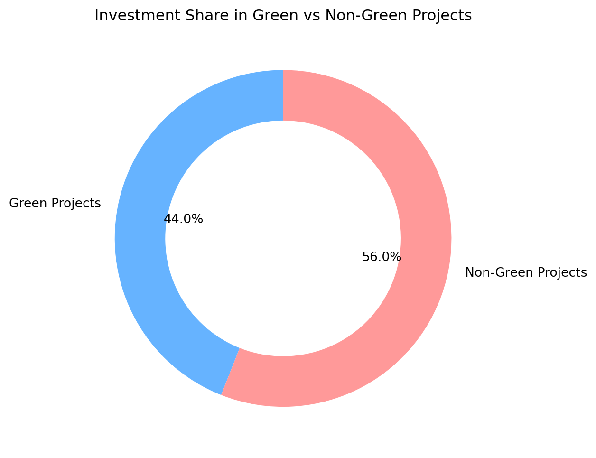
Retail investing also heavily influenced by social media influencers.
Retail investing apps blend entertainment into the UX/UI of investing. For example Robinhood uses game-like features such as displaying a confetti animation to create a sense of excitement around trading investing. Retail investing UI/UX is simplified and gamified, which encourage impulsive short-term buying and selling with a focus on speculation over fundamentals and cause FOMO (fear of missing out).
Meme stocks are another aspect of the entertainmenization of investing. There are many groups of Twitter, Reddit, and elsewhere, where investing trends start, causing more volatility.
Community Investing Enables Financial Inclusion
In South Korea,
Koreans investing in influencers? Koreans investing into media personalities: Yuqing Zhao (2021)
An open question is whether young investors are more easily than professionals swayed by influencers? Influencers are terrible for investing… but? Sustainable investing, kids watch TikTok (lizlivingblue, n.d.).
Influencer - crypto twitter connections
Cryto influencers like combine beauty with investing Irene Zhao (2022)
Retail investors typically have less financial literacy.
Retail investing can be seen as a form of financial inclusion. Ant Group’s CEO Eric Jing says in (Turrin, 2021): “The financial system of the past 200 years was designed for the industrial era and served only 20% of the population and organizations. As we enter the digital age, we must better serve the remaining 80%”.
Among retail investors, there’s some appetite for sustainability however investors are not sure how to separate sustainable assets from less sustainable ones (Ho, 2019).
Doorn (2020): Many ecologically focused funds with different approaches have been launched in recent years, with variations in asset mix and style of management. Thematic asset management is expected to grow, with investors packaging opportunities based on consumer trends.
Smith (2019) suggests 74% of Chinese youth are looking for “positive impact”.
Lingeswaran (2019) suggest philanthropy is on the rise in Asia however
Li et al. (2022) suggests retail “investor attention can significantly improve enterprises’ green innovation level”
But there’s so much capital in large funds retails investor money doesn’t matter at all. does retail money make any difference? Retail Investor Helpers: A wide number of banks are offering services marketed a sustainable. It’s hard to decide.
For example - In Sweden “Preferences for sustainable and responsible equity funds
Lagerkvist et al. (2020) undertook a choice experiment with Swedish private investors.
Anon (2021e) Swedish green fintech (important article)
Gov launching ESG funds.
Why is this important to research now? People in their twenties should invest in their future. Millennials and younger generations like services with a green, eco-conscious focus. Given our combined power (I’m a Millennial) with Generation Z, we are willing to pay more for sustainable products.
Personalized Investing
2022 saw a wave of new platforms aiming to make investing easier for retail investors
One example is Revolut, which expanded from a simple payments app to support varied saving and investment types (Anon, 2023l, 2023g).
Gamestop for climate massively collaborative investing by gen-z?
Tan (2020) proposes “financial ecologies” to understand the dynamic relationships between various actors: investors, advisors, government, where the government plays an active role in growing financial inclusion and responsible financial management. However, the paper further suggests that current robo-advisors (available in Singapore) make the investor captive to the agency of AI, making the person lose agency over their financial decisions.
ESG apps in Singapore:
DBS LiveBetter consumer sustainability app (DBS Singapore, n.d.; DBS, 2018)
Singapore ESG open data platform (Monetary Authority of Singapore, 2023)
Bonds are a form of debt investment also known as an fixed-income asset where the principal is repaid at the maturation date of the bond (usually in years) with an added premium. Individuals can’t emit bonds but they can invest in them. It can be a way to invest locally in one’s own city - or globally. For individuals, there’s access to some green bond exposure through ETFs (exchange-traded funds) available on retail investing apps.
Access is not universal and availability depends on the geography of the user and local legislation; for example Revolut, the most downloaded finance app in the EU, only enabled bond investing for European customers in summer 2024 (Revolut, 2024b, 2024a). Investing in bonds is a form of Passive Investing and allows investors focus on low-risk passive income instead of daily stock investing most popular on Robinhood and Revolut - albeit with much less potential for returns.
Green bonds are released by companies, international organizations, and cities to raise money for green transformation, usually for building something to improve sustainability, tied to specific projects. There’s a growing global trend in green bond emission, with 257 Billion USD worth of green bonds issued in 2019, expected to reach 1 Trillion USD annually by 2030 (MacAskill et al., 2021). That prediction was too low with 870 Billion USD green bond emissions reached already in 2023; currently Europe is the largest emitter of green bonds (Climate Bonds, 2023). China has the 2nd largest green bond market in the world and it’s growing fast; buyers are looking for green bond certification to reduce yield spread, meaning the price of the green bond is becoming more similar to the price of a ‘regular’ bond (Peng & Xiong, 2022; Li, Zhang & Wang, 2022).
In 2017 the Malmö city in Sweden released green bonds to finance a sustainable transition of the city (City of Malmö, 2017). An independent analysis found bonds may not be emitted for financial reasons but to improve the reputation and city image, lower interest rate (aptly named greenium) with a similar in returns to traditional bonds - and have their share of challenges, namely being difficult to certify, monitor, report and measure impact of (Sjöström et al., 2020).
Making sure a green bond is truly supporting sustainability is a challenge. For example, Aramco, the Saudi Arabian public petroleum and natural gas company faced scrutiny for what critics deemed as ‘Fake green bonds’ (Anthropocene Fixed Income Institute (AFII), 2022). Green bonds can also be emitted on blockchains with the stated goal of improving transparency. Hong Kong multi-currency green bond on the blockchain. The issuer (Hong Kong government) hopes to reduce greenwashing (Hall, 2024; Kitano, 2024). In the EU as well, there are emerging tools for monitoring green bonds on blockchain (Christodoulou et al., 2023). (Qin et al., 2023) finds evidence that the combination of green bonds and blockchains are an enabler carbon neutrality in China. The World Bank successfully raised 110 Million USD in Australia in 2018-19 and has since doubled the amount in a new 220 Million USD emission in Switzerland using bonds on a blockchain ledger for SDG-related projects (World Bank, 2024, 2019, 2018).
world_bank_bonds()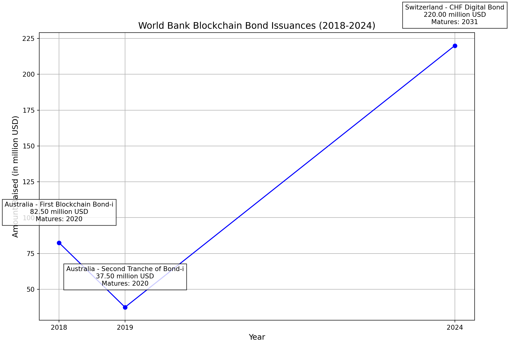
Sustainability-Linked Bonds are less stringent than green bonds; they are not tied to specific projects but more broad sustainability targets (Priscila Azevedo Rocha, Akshat Rathi & Todd Gillespie, 2022): “Sustainability-linked bonds let companies borrow cheaply if they meet environmental, social, and governance targets. A Bloomberg News analysis found those goals are weak”. (Priscila Azevedo Rocha, Akshat Rathi & Todd Gillespie, 2022) suggests “So far, most ESG investing is in the stock market. But the the $22 trillion corporate bond market, where mature global companies such as Chanel go to borrow money from investors, has a particularly powerful role to play. Companies rely on debt much more than they do on stocks.”
“Green Bonds, Sustainable Equities, ESG-focused Mutual Funds and ETFs, Impact Investing (through platforms), Renewable Energy Infrastructure (via ETFs or mutual funds), Sustainable Real Estate (through REITs or ETFs), Social Bonds, Carbon Credits (via ETFs or specialized funds), Sustainable Commodities (via ETFs or funds), Community Investing (through CDFIs or crowdfunding platforms), Sustainable Infrastructure Funds (available as ETFs or mutual funds), Environmental, Social, and Governance (ESG) Metrics Integration (through broad ESG-focused ETFs or funds)”
Such as “green shops” there are green investing platforms, green ETFs, etc. All of these are essentially forms of branding designed to make it easier for investors to find an investing product they trust.
There are many ‘green investment platforms’ who to trust?
| Name | Description | Link |
|---|---|---|
| Trine | trine.com | |
| The Many | the-many.com | |
| Sugi | sugi.earth | |
| ClimateInvest | clim8invest.com | |
| Circa5000 | circa5000.com | |
| FairOwn | fairown.com |
Hankewitz (2021)
Investing - Your investment fund’s ESG thesis investing thesis investing expert investing thesis research
Investing thesis
Open Banking: “Open Banking offers massive potential for improving online customer experience. That potential starts with the payment experience, which then generates a positive ripple effect through the entire customer journey. ” investing into good companies
Hedge funds generally are not accessible to retail investors, requiring a substantial minimum investment. However some Hedge Fund ETFs and Mutual Funds with Hedge Fund Strategies may try to mimic hedge fund strategies investing in the same assets.
It’s how the wealthier people invest.
(BlackRock, 2022) notes some ESG-oriented hedge funds can be “highly engaged with management teams” in order to influence management towards ESG practices in said companies.
Nathan Reiff (2023)
Ian Bezek (2021)
Anon (2021d)
Hedge (2023): Make a hedge fund with your friends
Most successful investor invest together
Angelist
new asset classes
asset_classes()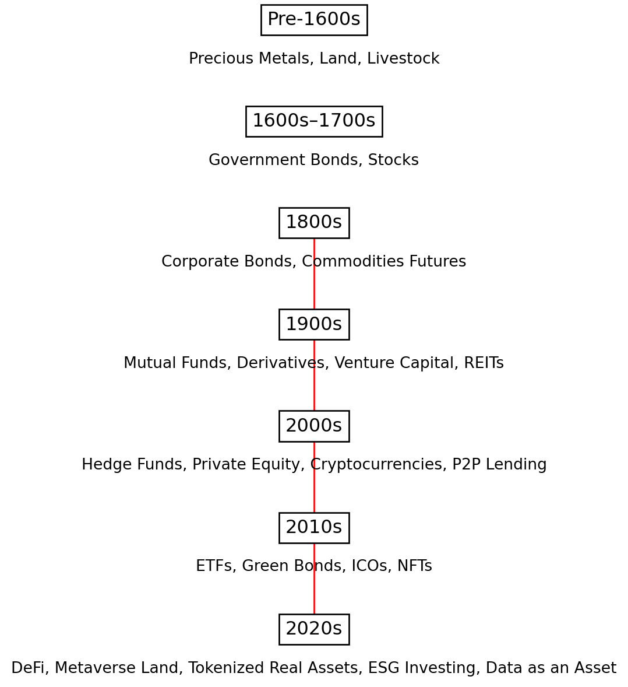
There are many asset classes only some of which would be accessible to a retail investors.
| Investment Product |
|---|
| Stocks |
| Bonds |
| Mutual Funds |
| ETFs |
| Insurance Products such as Variable Annuities |
Thematic Capital, Build a thematic portfolio. There’s a wide range of investment products marketed as sustainable, however many of them are fake (CITATION).
According to (Debnath et al., 2022) 39% of global CO2 emissions comes from the building sector. Construction is large emitter because of the use of concrete; super tall buildings are very CO2 intensive (Zhao & Qin, 2015). Building emissions can be reduced by using sustainable design and materials, digital twins of architecture enable pre-visualization of different designs (Panaro, Parlow & Amman, 2024) as well modeling the usage of the building, for example the interior shop floors in commercial real-estate (Jia, Wang & Zhang, 2023). In housing development, there’s evidence of ‘green’ buildings achieving a ‘higher financial return than conventional buildings, both in terms of rent and sale price’ (Oyedokun, 2017).
Investing into real-estate is increasingly available on co-investing platforms allowing retail investors access into this asset class with a relatively low starting price. Thus investing in sustainable architecture can be an attractive proposal both from an environmental as from a financial standpoint, also providing a passive income stream in the form of rent.
Retail investors can lend small amounts of money (also known as MicroLending) on peer-to-peer (P2P) lending platforms such as Twino. These loans and pooled and the risk is borne in aggregate as a form of risk-management.
Crypto investing removes most entry barriers while having high risk. Cryptocurrencies are the most popular financial action among young people (ADD CITATION) yet in some ways crypto needs even more financial literacy than traditional financial assets. Anon (n.d.a) estimates over 600 million cryptocurrency users worldwide.
Brazilian (N=573 ) “Crypto investors in Brazil are generally younger, male, and exhibit higher risk tolerance compared to non-crypto investors.” Colombo & Yarovaya (2024) “Brazil’s planned adoption of CBDC (Central Bank Digital Currency).” “It finds that risk tolerance, economic pessimism, and a belief in better investment acumen are significant predictors of crypto investment.”
Anon (n.d.l) Crypto DeFi education
OpenSea (2022) Taiwanese digital influencers as NFTs.
Crypto tools allow you to look at any wallet already
FINMA (2021) First crypto fund
Raido Tõnisson (2022b) due to a law change Estonian could take out their pensions and invest or spend them however they wanted.
Centralized Crypto Exchanges vs Self-Wallets - Centralized Crypto Exchanges are in essence loaning assets from the user. “The piece of the settlement aimed at getting important information to customers is more understandable from a retail protection standpoint. Customers who lend crypto assets to a company in exchange for a promised return should get the information they need to assess the risks against the rewards” (Hester M. Peirce, 2022).
Financial Engineering - Crypto enables financial innovation and financial engineering by anyone with some programming skills.
Pricing Crypto
Taiwan bans buying cryptocurrencies with credit card because the volatility makes it similar to gambling (David Attlee, 2022; 廣編企劃, 2022).
However volatility is relative. Volatile national currencies lead people to find other assets to hold. If your national currency is collapsing, you might find crypto has a relative safe haven to keep your funds.
People like Turkey losing 75% of the value of their assets when currency collapses, why people buy crypto.
Bitcoin is by far the most popular crypocurrency with it’s high price volatility creating opportunities for high gains and high losses. While bitcoin has been called a “digital gold” for store of value, its volatility characteristics are very different from gold, as seen on this chart.
bitcoin_vs_gold_futures()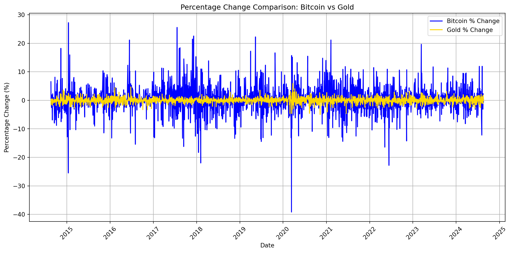
The volatility of the markets has notably shifted crypto research towards pricing theories.
crypto_pricing_theories()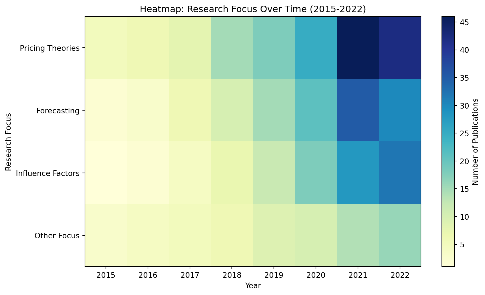
For example, in X research an index of major sustainability news was compared with crypto prices, which may have negative, positive, or no correlation with the following cryptocurrencies.
Insitutional Funds Enter Crypto Crypto ETFs enable people to have exposure to crypto without ever buying cryptocurrencies directly themselves. - swissinfo.ch/urs (2022) “More than half of the Swiss banks plan to offer digital assets services over the next few years.” - Anon (n.d.w): Crypto bank - Raido Tõnisson (2022a) Estonian bank selling Metaverse cryptocurrency Sandbox
DAOs
DAOs (Decentralized Autonomous Organization) can be use in a similar way to Hedge funds, a DAO can have a shared multi-sign wallet than is invested together.
A lot of financial tooling and more than trad-fi has been replicated in crypto.
Decentralized Autonomous Organizations (DAOs) which have an investable treasury may be compare to Hedge Funds as a collective form of investing. Because of the on-chain nature where transactions are visible to anyone, they may be seen as more transparent. Typically DAOs have a voting system to make decision while Hedge Funds may be more centrally controlled. Also, the legislation affecting each would be different as hedge funds are an older and more established financial tool whereas DAOs still fall in somewhat of a gray area.
Anon (2023n) DAOs to enable concerted action towards climate goals using the pooled resources in a treasury, a blockchain (on-chain), similar to how hedge funds work.
Carra Wu & Chris Dixon (2021) DAO consumer to investor
Lucas Matney (2022)
BlockChannel (2017)
Anon (n.d.j): Crypto investment clubs canceled
Anon (n.d.i): Crypto crop insurance
Social + NFTs - What would investing look like at the scale of 1 billion people
Oracles for Sustainability Data
Intersection with finance and Real World Data.
A data oracle is the concept of a source of real-world data which can be ingested through an application programming interface (API) to a blockchain system. There are many databases of sustainability information which could serve as an oracle for carbon labeling, packaging, transportation, consumption, and waste.
Ethereum (2023)
Caldarelli, Rossignoli & Zardini (2020) notes it’s a challenge to ensure the accuracy and trustworthiness of real-world data from Oracles.
Brady Dale (2021) and Chainlink (2022): The largest Oracle provider ChainLink founder Sergey Nazarov believes the collaboration of oracles and blockchains can make carbon credits more trustworthy.
IPCI OpenLitterMap G.I.D Coin Regen Network
dGen & PositiveBlockchain (2021): Positive Blockchain Database of blockchain for good projects
Regenerative Finance (REFI)
Cryptocurrencies - Celo and Impact Market - Celo invests into ReFi on the code level - Marten Põllumees (2022) retirement funds invested in crypto
On the intersection of cryptocurrencies, blockchains, and nature-backed assets.
Efforts to connec carbon markets, carbonmark.com
“We believe that markets for ecosystem assets need to scale urgently, starting with carbon markets. The challenge is to make these instruments as recognizable as tradable assets, as measurable as financial securities, and as investable as other asset classes. Capital must flow into the environment at scale to deliver climate action.” “Efficient financial markets allocate and manage risk based on effective price mechanisms, and this relies on access to credible information.” BeZero (2022b)
“Everyone in the market is struggling to effectively price and manage risk.. the Voluntary Carbon Market (VCM); a rapidly recovering market, forecasted to grow by as much as 100x, but constrained by a nascent market structure.” “The BCR is a carbon-only expected return model. It utilises a risk-based approach and seeks to give everyone a common language of risk. One that is translatable to that used by the $200 trillion of assets in global financial markets.” BeZero (2022a)
“climate action as an asset-liability problem”
“Automate your carbon accounting. Make data-driven decisions, across your entire supply chain.” Ratings for mines CarbonChain (n.d.)
Divesting is the inverse of investing. Divesting may have a meaningful impact on companies if large numbers of retail investors collaborate on ‘banning’ the company to send a message to the board. Small individual divestment has no impact on the governance decisions.
In institutional finance, the Norwegian $1.3T USD sovereign wealth fund (the world’s largest) started a divestment trend in 2016 by divesting first from coal following by divesting from oil, gas and coal extracting companies (Ben Martin, 2017; Holger, 2019). Their plan to reach net zero CO2e nonetheless only targets 2050. Furthermore, who would be the counterpart for such large transactions. The fund also announced divesting from Russia after its invasion of Ukraine, however has yet to sell any shares citing lack of buyers on the Moscow stock market.
University of California also followed suit with divestment of its $126B USD portfolio from oil and gas.
There’s also a trend of investors looking for sustainability in addition to profits in a few countries.
Burkart (2022)
Assumptions: — where to put money makes a difference to sustainability. i.e. it matters what we buy, what we save, and where we invest
Hypothesis?
Anon (2023i)
Anon (n.d.c)
Anon (2019b)
Anon (n.d.x)
SPARQAN
Rupert Jones (Mon 7 Feb 2022 07.00 GMT)
Jackson (2020)
Stef (2019)
Anon (2023j)
Seeking Alpha (2020)
Marko (2022)
Consumer debt in the USA
The world will be very different in 30 years - it’s time to invest in services that make our societies resilient, able to robustly respond to rapid change. Research and product development go hand-in-hand; the outcome of this study can provide insights for new financial product and service development. Related to SDG 9: “Build resilient infrastructure, promote sustainable industrialization and foster innovation”. The complexity of the situation offers an opportunity for design to make it understandable for humans
In 2021 the Estonian government decided to free up mandatory retirement savings so people can exercise their own judgment on how to invest (or spend it). Financial analysts are worried the Estonian population will spend their retirement savings right away - instead of investing.
Gary Gensler (2022) Investor protection, making investing accessible, climate risk disclosure
Anon (2021c) Doconomy Business footprint
Econometrics is the science of measuring the economy.
The creator of the Gross Domestic Product (GDP) metric in 1934 Simon Kuznets said: “The welfare of a nation can scarcely be inferred from a measurement of national income as defined by GDP…Goals for ‘more’ growth should specify of what and for what” (United States. Bureau of Foreign and Domestic Commerce, Seventy-Third Congress & Kuznets, Simon, 1934).
GDP was the culmination of previous work by many authors, beginning with William Petty in the 17th century (Rockoff, 2020). This long journey underlines how a metric about a complex system such as the economy is continuous work in progress. There has been ongoing work to create improved metrics such as the the Sustainable Development Goals (SDGs), Human Development Index (HDI), Genuine Progress Indicator (GPI), Green GDP, Inclusive Wealth Index, and others (Bleys & Whitby, 2015; Kovacic & Giampietro, 2015; Anielski, 2001).
Measuring wellbeing in addition to GDP and the metric should including resiliency dashboards, to to visualize metrics beyond GDP and they are an integral part of country reports (GreensEFA, 2023). Similarly, the doughnut (donut) economics (more below) model calls for a “dashboard of indicators” (TED, 2018).
The first two decades of the 21st century have seen increasing economic thinking, looking to challenge, improve and upgrade capitalism to match our current environmental, social, and technological situation, often called New Economics. Some of these include behavioral economics, sustainable capitalism, regenerative capitalism, doughnut economics, ecological economics, blue economy, degrowth, attention economy, gift economy, intent economy, among others. There’s no lack of published books on changing capitalism, which goes to show there’s readership for these ideas. Build a new economic theory is out of scope for my thesis design, however I’ll focus on the parts of economic theory I believe are relevant for interaction design-ing for sustainability.
econ_history_chart()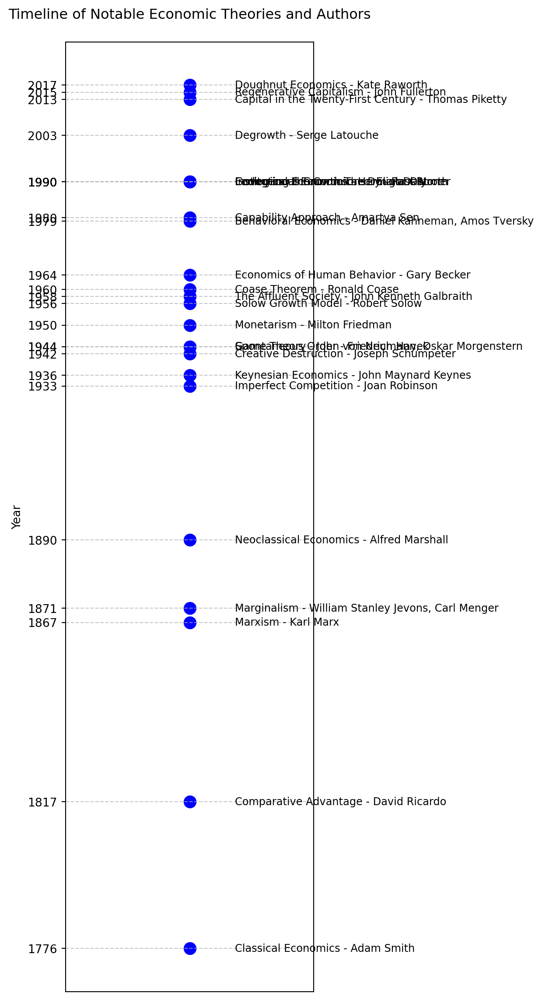
There are those looking for new metrics. One of the first innovators, already in 1972, was Buthan, with the Gross National Happiness Index (GNH), which in turn inspired the UN, decades later, in 2012, to create the International Wellbeing and Happiness Conference and the International Happiness Day(Ribeiro & Lemos Marinho, 2017; Kamei et al., 2021). The World Bank talks about the comprehensive GDD+ metrics in its Changing the Wealth of Nations report (World Bank, 2021).
The Wellbeing Economy Alliance (WEAll) countries (New Zealand, Iceland, Finland, Scotland, Wales) as well as the EU and Canada, started the coalition in 2018 looking to involve more broad-based metrics in developing their societies(Ellsmoor, 2019; David Suzuki Foundation, 2021; CEPR, 2022; Scottish Government, 2022; Wellbeing Economy Alliance, 2022).
Giacalone, Mattera & Nissi (2022) looks at wellbeing of Italian communities and proposes a new composite index.
There’s work ongoing on macroeconomic modeling, aiming to create a digital twin of the economy. Some of the most complex computer models of the economy include the Global Integrated Monetary and Fiscal Model (GIMF) (Laxton et al., 2010) and DSGE (Dynamic stochastic general equilibrium).
In the simplest sense, prices do not capture all costs. “Consumption, production, and investment decisions of individuals, households, and firms often affect people not directly involved in the transactions” (Helbling, 2012). Externalities as an economic concept was implied by Alfred Marshall, one of the founders of neoclassical economics, in his 1890 treatise “Principles of Economics,” and further developed by Arthur Cecil Pigou in his 1920 book “The Economics of Welfare” (Marshall, 1997; Pigou, 2002). As of 2023, the value of unpriced externalities which are not included in the GDP is 7.3 trillion USD per year (Trucost & TEEB for Business Coalition, 2023). The award-winning economist Mariana Mazzucato argues in (Gupta, 2020) we should include more into how we value unpaid labor, relating to the social (S in ESG) (Mazzucato, 2018) as part of our metrics.
While Adam Smith is most famous for his concept of the invisible hand first appearing in The Theory of Moral Sentiments (1759) and further developed in his seminal work The Wealth of Nations, published in 1776, his writings also highlight the interdependence of economic actors, who through specialization increase productivity, but also increasingly dependent on each another as well as the role of empathy in individual actions (Atal et al., 2024).
Ecological economics doesn’t necessarily argue with the foundation of classical economics, rather ecological economics finds the classical economics model and by extension neoclassical economics are incomplete, ignoring the physical limits of natural resources. Ecological economics draws attention to the interdependence of economy and the ecosystem; there are physical limits to economic growth on a planet with finite resources.
The biggest point of contention is the necessity of economic growth. The founder of ecological economics Herman Daly was talking about prosperity without growth more than two decades ago, focusing on the diminishing natural resources (Daly, 1997). More recently.(Jackson, 2009, 2017) have expanded on these ideas with recipes for a post-growth world, making the ideas seem more tangible and precise, yet mostly untested in the real world.
New economic thinkers are asking how can economic growth and sustainability be compatible. Some even ask if economic growth itself is the wrong goal? (Diduch, 2020). Degrowth is the most famous contender in that branch of economics. Is Decoupling Economic Growth and CO2e Emissions Possible? Is Green Growth an oxymoron? No-one knows as it hasn’t been done before. Degrowth proponents are pessimistic it’s possible to decouple greenhouse gas emissions from economic growth; historical data shows does not show any decoupling. Some data from China shows decoupling?
Doughnut Economics, introduced in the eponymous book uses a simple visualization of a doughnut (donut) to help us grasp the big picture of the economy embedded inside the physical and social worlds (Raworth, 2017). It allows one to see the social shortfall and ecological overshoot of nations at the same time (Fanning et al., 2021). The doughnut concept is simple and deep at the same time, a useful as social object to enable starting conversations with people from all walks of life, independent of their politics leanings. As Raworth calls it, it’s a “self-portrait of humanity in the beginning of the 21st century”. Combining the SDGs (Sustainable Development Goals) inside the doughnut and the Planetary Boundaries (Earth’s ecological ceiling) outside the doughnut, leaves a space inside the donut represents a state of equilibrium and balance on spaceship Earth.
In some ways this Doughnut Economics can be described as a movement. Doughnut Action Labs enable local communities to build local donuts customized to local problems. While the ideas have not yet been implemented on a country-level, smaller scale doughnut economics’ success stories have inspired cities to take a comprehensive view of the doughnut of their own city with several EU cities adopting the vision (Jordan G. Teicher, 2021). While critics say doughnut economics would expand the role of the government (Horwitz, 2017), doughnut practitioners in Brussels believe everything can be adapted to the place and context (Oikos Denktank, 2021; BrusselsDonut, 2022).
The city of Amsterdam is developing shorter food chains (which save CO2e) and linking residents with food production and reconnecting people to the food which foster collaboration in the community (Circle Economy, 2021). Amsterdam has also built comprehensive dashboards called the Circular Economy Monitor which makes it easy for anyone to see the progress being made towards the Dutch goal to be a circular economy by 2050 (Waterstaat, 2019; Gemeente Amsterdam, 2022).
| Shortening Food Chains in Amsterdam |
|---|
| Spatial planning for food place-making in the city |
| Circular agriculture |
| Regionally produced food |
| Collaboration between chain members |
| Food education |
In his 2015 paper Regenerative Capitalism, John Fullerton, an investor and a capital markets and derivatives expert, builds his economic theory on the ideas of Club of Rome and the Limits to Growth (Anon, 1972) as well as taking inspiration from R. Buckminster Fuller.
“Nature is a totally efficient, self-regenerating system. If we discover the laws that govern this system and live synergistically within them, sustainability will follow and humankind will be a success.” (Fuller, 1983)
“[H]uman civilization is embedded in the biosphere,” Fullerton’s ideas aim to balance efficiency with resiliency so the whole system doesn’t become brittle and break (John Fullerton, 2011, 2022; Confino, 2015). While regenerative capitalism recognizes the need for economic growth it also deems “[t]he quality of growth matters” (Anon, 2023k). For example, he cites the example of Triodos Bank which already in the 1980s focused on sustainable banking championing responsibility, transparency, and business ethics. A member of the Global Alliance for Banking on Values, Triodos finances projects in nature preservation and restoration (GABV, 2023).
The possibility of decoupling economic growth from CO2e emissions (also known as decarbonizing the economy or eco-economic decoupling) or is hotly debated (pun intended) among scientists. (Keyßer & Lenzen, 2021) provides several scenarios for low, medium, and high levels of decoupling titled Degrowth, IPCC, and Dec-Extreme.
climate_scenarios_chart()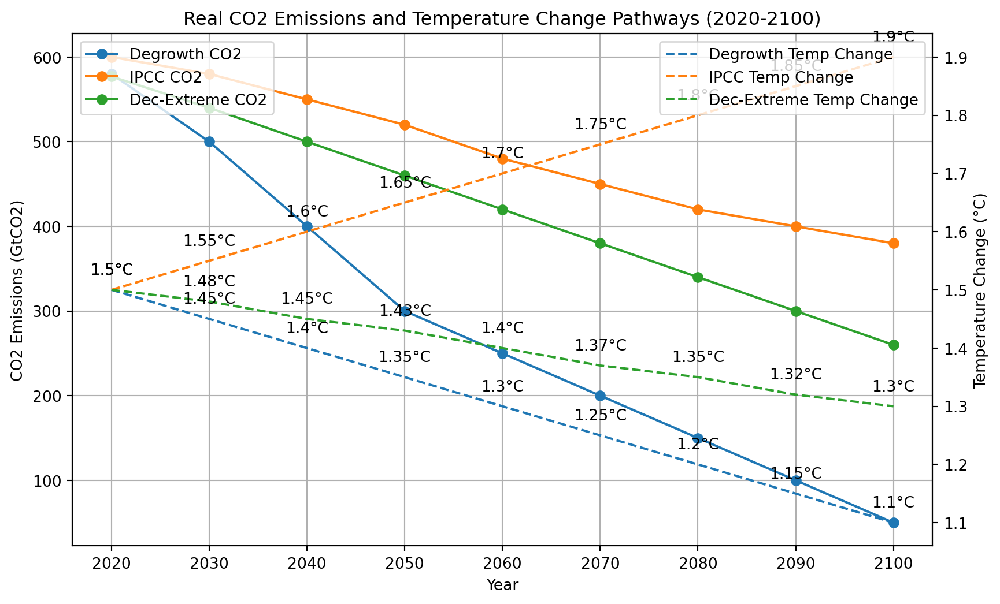
Looking a the United Kingdom, (harrisson, 2019) concludes UK’s CO2e emissions have fallen 43% from 1990 to 2017 through the use of less carbon-intensive energy sources and argues for moderate policies in (Hausfather & Peters, 2020).
uk_energy_emissions_trend()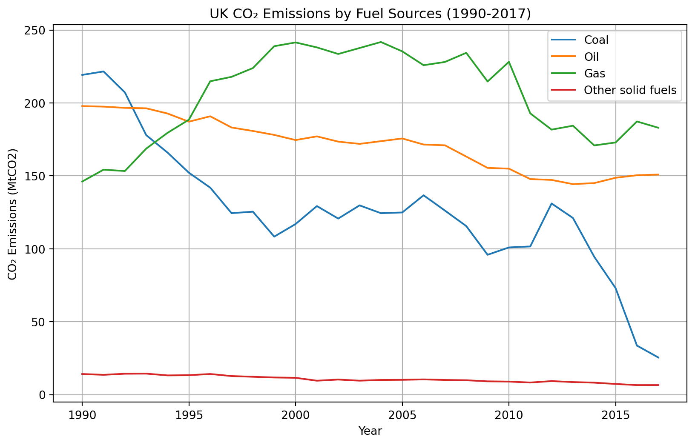
Meanwhile the cumulative CO2e emissions trend in the UK in the same timeframe show the historic responsibility of UK (Global Carbon Budget, 2023).
CO2e emissions and GDP growth per capita follow a similar path in the BRICS countries (Brazil, Russia, India, China, South Africa) as well as in Vietnam and Somalia (Viana Espinosa De Oliveira & Moutinho, 2022; Warsame, Mohamed & Sarkodie, 2024; Raihan et al., 2024).
growth_brics()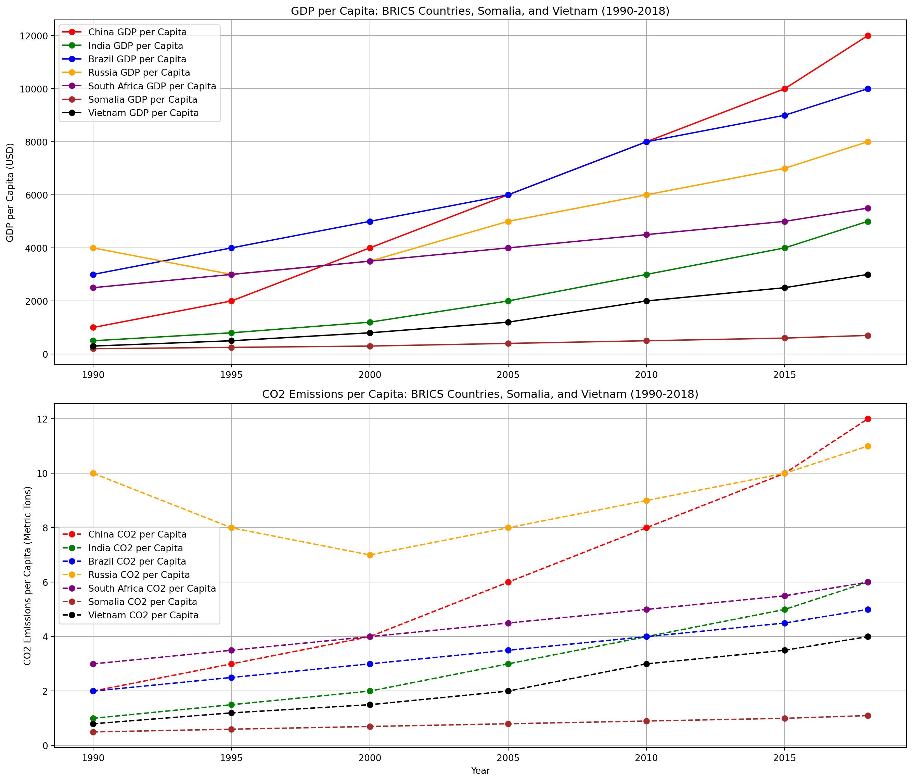
Greenwashing is one of the largest blockers of sustainability. Both the European Commission and the Chair of U.S. Securities and Exchange Commission (SEC) Gary Gensler have called for more legislation to curb business greenwashing practices. “If it’s easy to tell if milk is fat-free by just looking at the nutrition label, it might be time to make it easier to tell if”green” or “sustainable” funds are really what they say they are” says Gensler (US Securities and Exchange Commission, 2022). EU regulation for standardizing sustainability reporting is called the Corporate Sustainability Reporting Directive (CSRD) entered into force in 2023 as is being gradually ramped up until 2027.
Green investing only makes sense if it’s possible to distinguish sustainable investments from not sustainable ones. Humans feel as if choosing green is useless and give up. Sustainabile investing is firstly about changes in legislation which set stricter sustainability standards on companies (as discussed above). Secondly, increased transparency, new metrics, and new tools make it feasible to differentiate more sustainable companies from less sustainable ones.
csrd_timeline()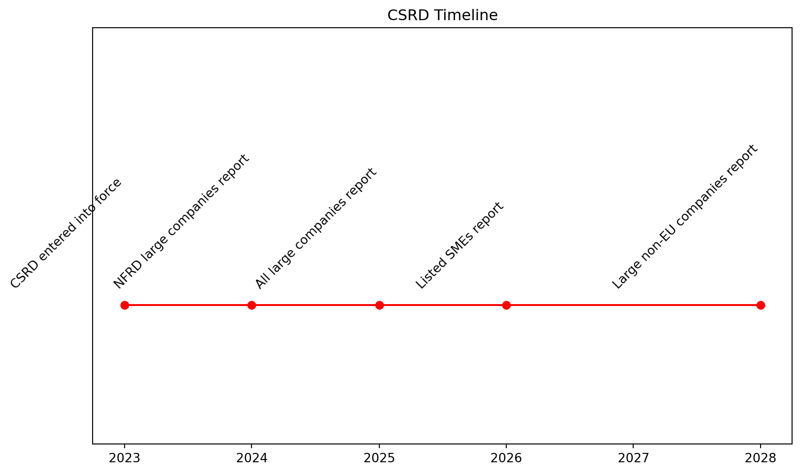
Upcoming EU greenwashing legislation hopes to curb misleading communications by companies. “Make benchmark methodologies more transparent when it comes to ESG & put forward standards for the methodology of low-carbon and ESG benchmarks in EU” (European Commission, 2019). Until new legislation is ramped up (2030 in the EU), building consumer awareness is crucial as currently most emission-reduction programs are voluntary and thus affected only by consumer demand (André & Valenciano-Salazar, 2022). Greenwashing is widespread in company social media communications (Geoffrey Supran, 2022). A number of new AI-based tools aim to find instances of greenwashing. ClimateBert AI finds rampant greenwashing (Bingler, Kraus & Leippold, 2021; Sahota, 2021).
While the EU has proposed legislation to curb greenwashing, EU climate policy itself has been criticized for greenwashing. Sometimes greenwashing comes under legislative protection Kira Taylor (2021). (Booth, 2022) describes how “A recent investigation shows illegal logging of protected areas in eastern European countries that supplies residential wood pellets in Italy. Belgium, Denmark, and the Netherlands are importing pellets from Estonia, where protected areas are logged for pellets and the country has lost its forest carbon sink, despite large-scale wood pellet plants being certified ‘sustainable’ by the Sustainable Biomass Program”.
In recycling systems,(Purkiss et al., 2022) highlights the confusion between compostable and biodegradable plastics and public misunderstanding what happens to these plastics when they reach the landfill: “[m]ost plastics marketed as”home compostable” don’t actually work, with as much as 60% failing to disintegrate after six months”. Shopping bags marketed as biodegradable don’t show deterioration after 3 years in salt-water sea environment (Napper & Thompson, 2019).
Put very simply (knowingly oversimplifying), in traditional finance legislation is an enabler of corruption as in the case of Swiss privacy laws, where illegal funds can be hidden, while in cryptocurrencies, the lack of clear and comprehensive regulation is an enabler of corruption.
In order to consider the sustainability on a product level, there should be a directory of all the world’s products.
All of the world’s products are subject to one or another standard and although they are not uniform, there’s some documentation existing about every product. GS1 is the organization providing EAN/UPC barcodes on most consumer products (GS1, n.d.).
Konrad (n.d.) “an internet-wide directory of purchasable products, reminiscent of how the much of the world’s music is made available on streaming platform Spotify.”
Anon (n.d.p): Open Knowledge Foundation’s Open Product Data website shut down
Håkon Bogen (2016): “Is there a global database of all products with EAN 13 barcodes?”
Semantics3 (2017)
World product database
Anon (n.d.b): “open product database”
Anon (n.d.z) green tech database
Anon (n.d.q) packaging database
(Yüksel, Kalyoncu & Özdurak, 2023) criticizes excessive financialization for the 2008 economic crisis where the real economy and financial markets disconnected, proposing a new index for participation finance aiming to ground the financial economy in the real economy; rooted in Islamic banking, participation finance avoids highly speculative activities, which are seen as exploitative, looking to promote stability, transparency, and fairness.
Companies assess customer’s credit score to decide credit-worthiness, however inversely, how can customers rate companies? Indexes make comparing companies possible. There are many-many indexes, scoring systems, ratings, certifications, etc.
Frances Schwartzkopff (2022b) “Companies in industries with the biggest carbon footprints aren’t reporting how their emissions feed into financial risk, according to an analysis of corporate reports by the Carbon Tracker Initiative.”
BeZero is innovating in the voluntary carbon credit market (VCM) by providing risk-scoring, a language financial professionals are accustomed with.
Since the 1970s, international bodies, governments, and private corporations have developed sustainability measurement metrics, the prominent one being ESG (Environmental, Social, and Corporate Governance) developed by the UN in 2005. This rating system has already been implemented or is in the process of being adopted on stock markets all over the world and has implications beyond the stock markets, allowing analysts to measure companies’ performance on the triple bottom line: the financial, social, and environmental metrics.
ESG gives banks a new tool to market and sell environmentally conscious opportunities to institutional investors, for example, universities - a case in point being the recent partnership between HSBC and the University of Edinburgh (Reid, 2020). Another recent example is one of the largest private banks in Switzerland, Lombard Odier & Co, when they launched a thematic bio-economy fund inspired by the words of The Prince of Wales, ‘Building a sustainable future is, in fact, the growth story of our time’ (Jersey Evening Post, 2020).
In Taiwan, the Taipei stock market has listed ESG stocks since 2017 and was hailed by Bloomberg as a regional leader in ESG reporting (Grauer, 2017). In December 2017, the FTSE4Good TIP Taiwan ESG Index was launched, which tracks ESG-rated companies on the Taipei stock market (Taiwan Index, 2024). Nasdaq Nordic introduced an ESG index in 2018, and Euronext, the largest stock market in Europe, introduced an ESG index and a series of derivative instruments in the summer of 2020 (Euronext, 2020).
(Anon, 2022g) suggests ACWI ESG leaders outperform the non-ESG screened ACWI based on comparing MSCI indexes. It’s notable that ACWI ESG starts to outperform the traditional ACWI only in the past few years.
msci_esg_leaders()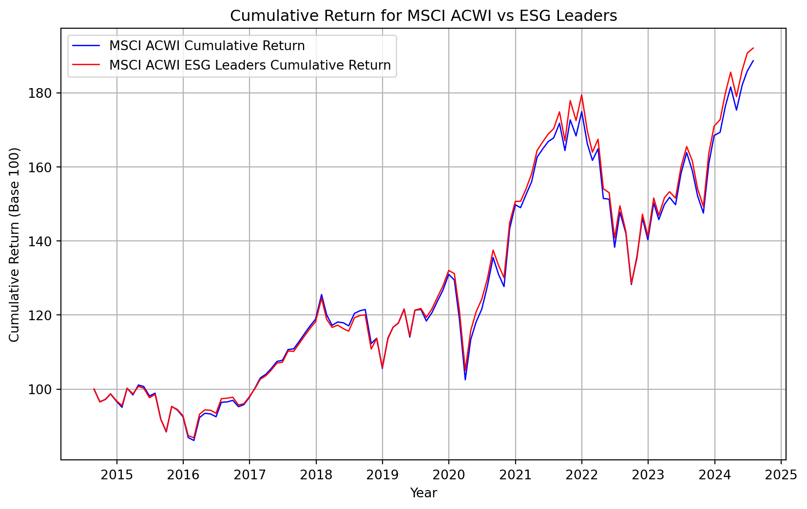
Sustainable Investing is Based on Data. Greenwashing is a large detractor from environmental action as it’s difficult to know what is sustainable and what is not. Greenwashing Disturbs Sustainable Capital Allocation. Greenwashing erodes trust. Greenwashing has a negative Impact on Credibility.
companies_triple_perf()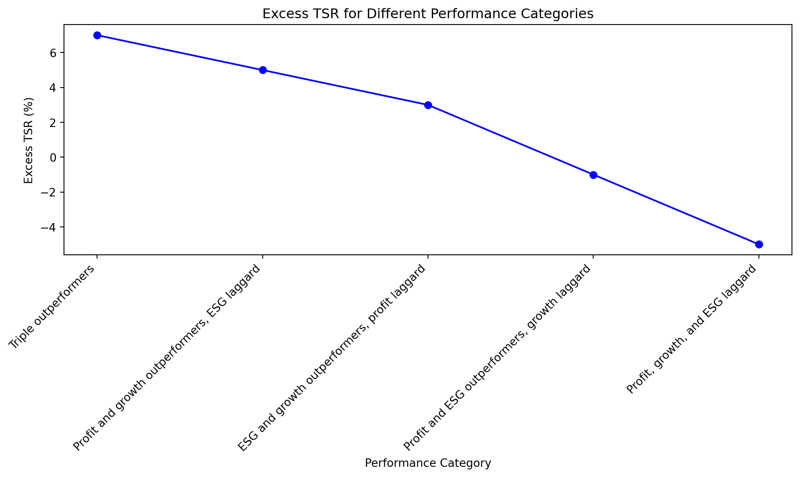
Marketing - Sustainability Marketing
Environmental Information Disclosure (EID)
Anon (n.d.t): Sites like Simply Wallstreet provide in-depth analysis: Simply Wallstreet also same for crypto
Snowflake analysis like Simply Wallstreet
Improve product provenance, blockchains offer this transparency
Sepandar Kamvar (2022) “A blockchain is a database without a database admin”
Anon (2021a)
Ganu (2021)
“[T]hanks to other emerging technology like IoT sensors (to collect ESG data) and blockchain (to track transactions), we have the infrastructure to collect more data, particularly for machine consumption. By measuring real-time energy usage, transportation routes, manufacturing waste, and so forth, we have more quantifiable ways to track corporations’ environmental performance without relying purely on what they say.” (Sahota, 2021)
Google Environmental Insights Explorer enables local governments (cities) to measure CO2 emissions and enact environmental policies that optimize city functions such as traffic flows (Anon, n.d.m; Nicole Lombardo, 2021)
In the U.S. and European banking sector (Dicuonzo, Palmaccio & Shini, 2024) performed an analysis of 180 banks’ data. Fintech Index and ESG Scores have a positive correlation, suggesting the adoption of technology has a statistically significant influence on better environmental stewardship, social and governance quality. Even larger predictors of high ESG score were than were Board Gender Diversity (Women on Board), the Size of the Bank, and Board Independence (governance structures with more independent directors could be more socially and environmentally responsible). On the flip side, out of the initial 1551 banks considered the majority did not have ESG data available to be able to perform the comparison.
esg_fintech_heatmap()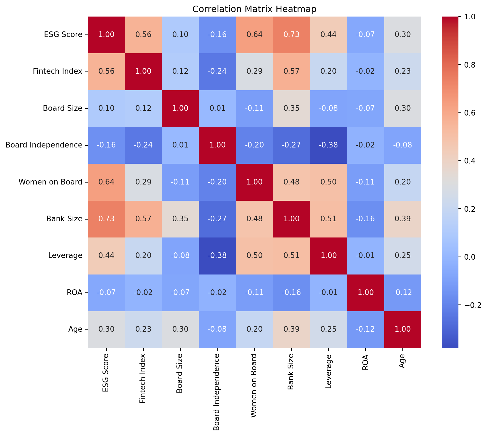
In China, (Lu & Li, 2023) finds digitization is the pathway to Environmental Information Disclosure (EID) and Green Innovation.
A systematic meta-review of 153 research papers of ESG literature around the world reports the major determinants of high ESG performance are board member diversity, firm size, and CEO attributes (Martiny et al., 2024).
esg_vs_board_diversity()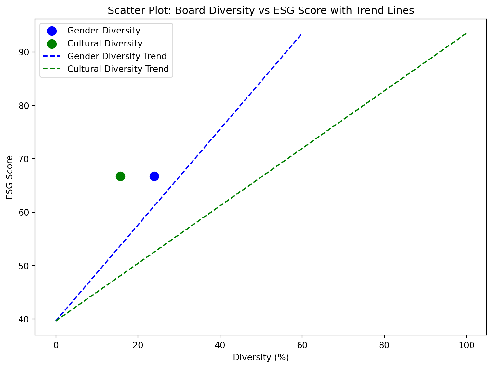
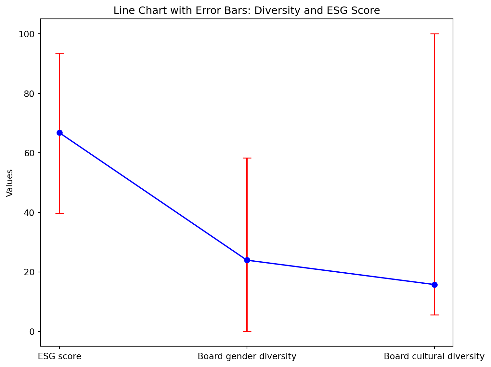
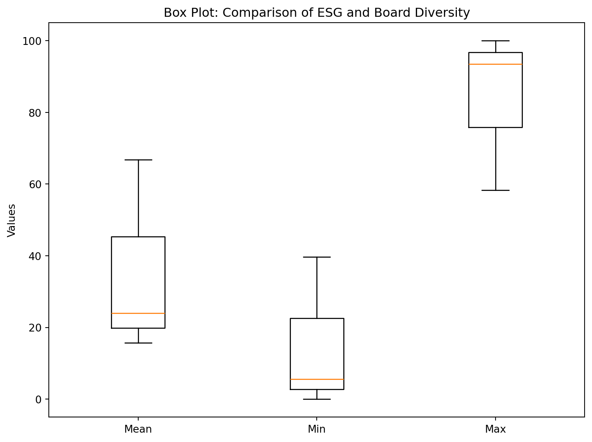
Board diversity in the TOP 5 companies based on Corporate Knights data (Corporate Knights, 2024).
ck_board_diversity()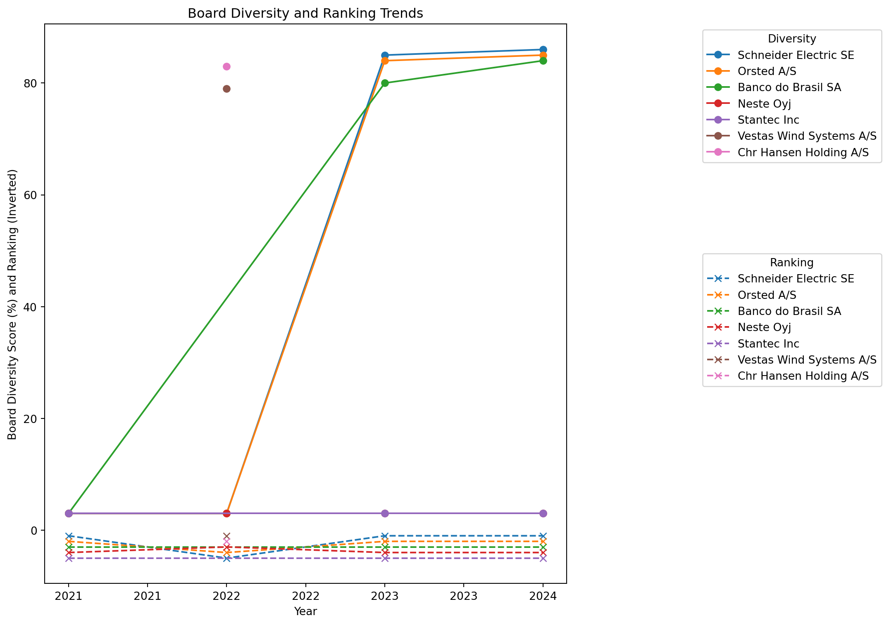
Shareholders can leverage their numbers and join forces in order to affect the board members of large corporations. For example, the As Your Sow NGO aims to champion CSR through building coalitions of shareholders and taking legal action, including the Fossil Free Funds initiative which researches and rates funds’ exposure to fossil fuels finance and its sister project Invest in Your Values rates retirement plans offered by employers (mostly US technology companies) (As You Sow, 2024a, 2024b)
(International Trade Centre, 2022) currently lists 334 different sustainability standards: “Towards a meaningful economy” “The world’s largest database for sustainability standards”, “We provide free, accessible, comprehensive, verified and transparent information on over 300 standards for environmental protection, worker and labor rights, economic development, quality and food safety, as well as business ethics.”
There are many standards.
Most sustainable companies. Make a database?
B Corporations undergo strict assessment and adhere to stringent sustainability practices.
Sustainability indices need transparency and standardization (Bolognesi et al., 2024).
Based on Corporate Knights data (Corporate Knights, 2024)
Energy productivity
ck_energy_productivity()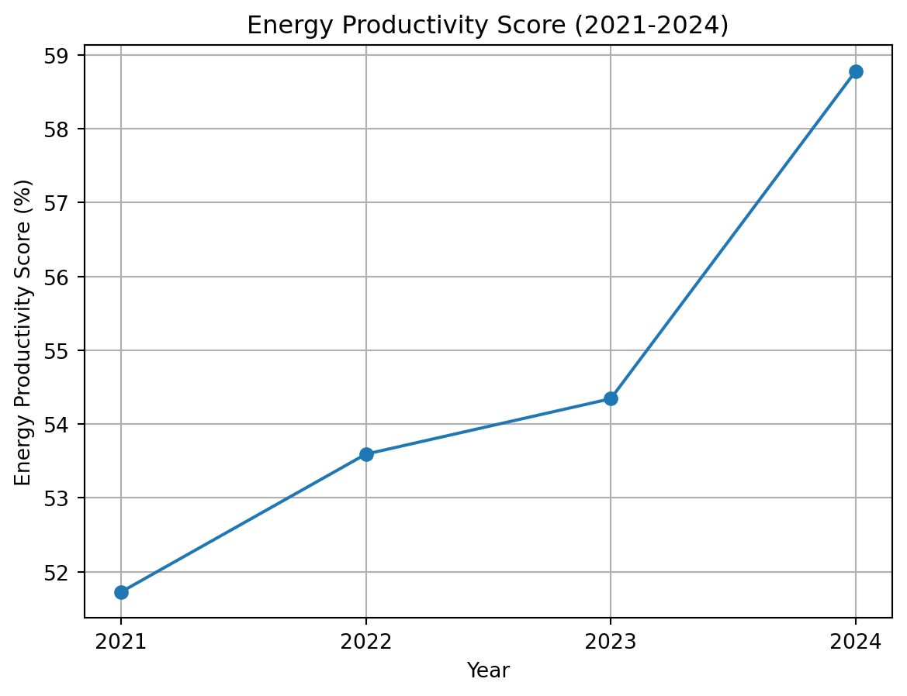
Carbon productivity
ck_carbon_productivity()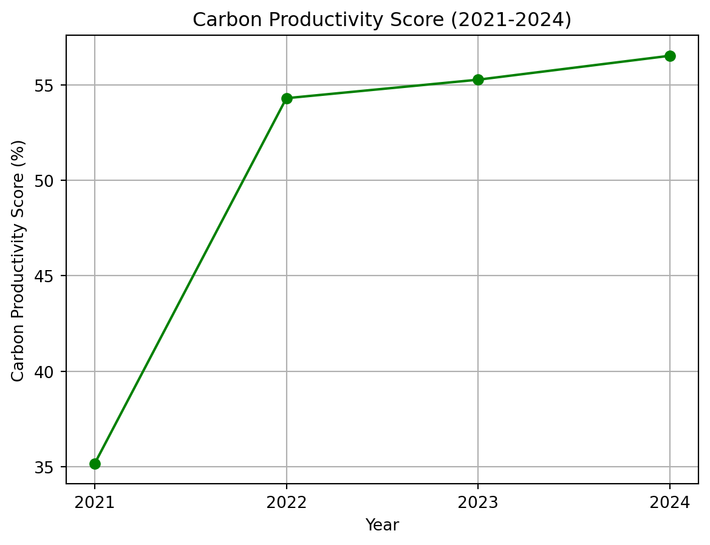
Research shows certification does matter. In Europe, consumers are willing to pay more for bio-based products “72% of Europeans are willing to pay more for environmentally friendly products. The study identifies a”green premium” and a “certified green premium,” indicating increased WTP for bio-based and certified bio-based products” (Morone et al., 2021). Particulary in Italy, a study of consumer awareness of sustainable supply chains shows Italian consumers have a strong preference for antibiotic-free meat (Mazzocchi et al., 2022).
Design Implications: Display certificates.
| Type | Rating System | What it does |
|---|---|---|
| Certificate | B Corporation | B Impact Assessment |
| ESG | ||
| Certificate | Fair Trade | |
| Ranking | Responsible Business Index | Anon (n.d.e) Responsible business index |
| Index | Greenly | Greenly Decarborization Index Greenly (2023) |
| Science-Based Targets | Science-Based Targets initiative (SBTi) provides step-by–step guidance per economic sector help companies get started with meeting climate criteria and emission reduction requirements. | |
| Certificate | Green Web Foundation | Anon (2023m) For example, the Green Web Foundation certifies how sustainable is the web hosting used by websites. Testing website CO2 emissions Wholegrain Digita (2023) |
| Leafscore for product | LeafScore (2023) | |
| Rating | Ethical consumer ratings | Anon (n.d.f) |
| 1% For the Planet | ||
| Standard | Climate Neutral Certified Standard | |
| Standard | The Conservation Alliance | (Climate Neutral Certified, 2023). |
| Index | Impakter Sustainability Inde |
There are many different certifications
Anon (n.d.f)
sustainable brands
Product-level reporting can be a basis for investing in companies. “Product-investing”. I want to invest in particular products.
Existing rankings
ESG is filled with greenwashing. ESG is a really low bad.
Q: Reflection on the ESG wave: Does a company that performs well in carbon reduction but whose products are harmful to health conform to the spirit of ESG?
Sest ei saa ESG ja teisi mõõdikuid usaldada, crowdsourced mõõdikud. openesg.com/because you can’t trust ESG (Aikman, 2022) !
metrics and goals: ESG, SDGs,
Bindman, Mendonca & Mendonca (2024) reports large ESG funds managed by BlackRock and Vanguard are investing into JBS, a meat-packing company which is linked to deforestation of the Amazon rainforest through it’s supply chain.
Shashwat Mohanty (2022): “sustainable funds don’t buy Zomato’s ESG narrative”
fund_types_chart()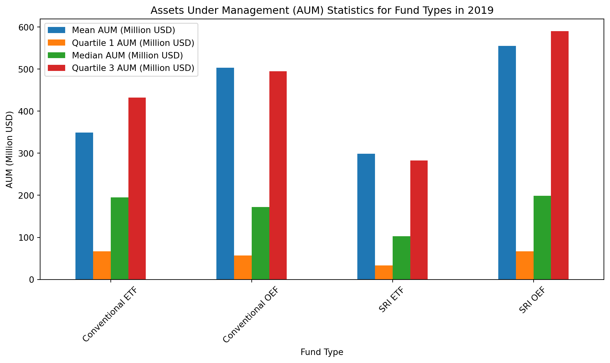
ESG risk
ESG greenwashing Baldi & Pandimiglio (2022)
ESG companies don’t emit less CO2 than non-ESG companies.. ESG Criticism “25 ESG ratings from three major providers (Moody’s Analytics, MSCI Inc., and Refinitiv)” - “well-rated companies do not emit significantly less carbon than those with lower scores.” Amenc, Goltz & Naly (2023)
(Popescu et al., 2023) shows SRI companies have a little bit smaller carbon footprint.
conventional_vs_sri_funds()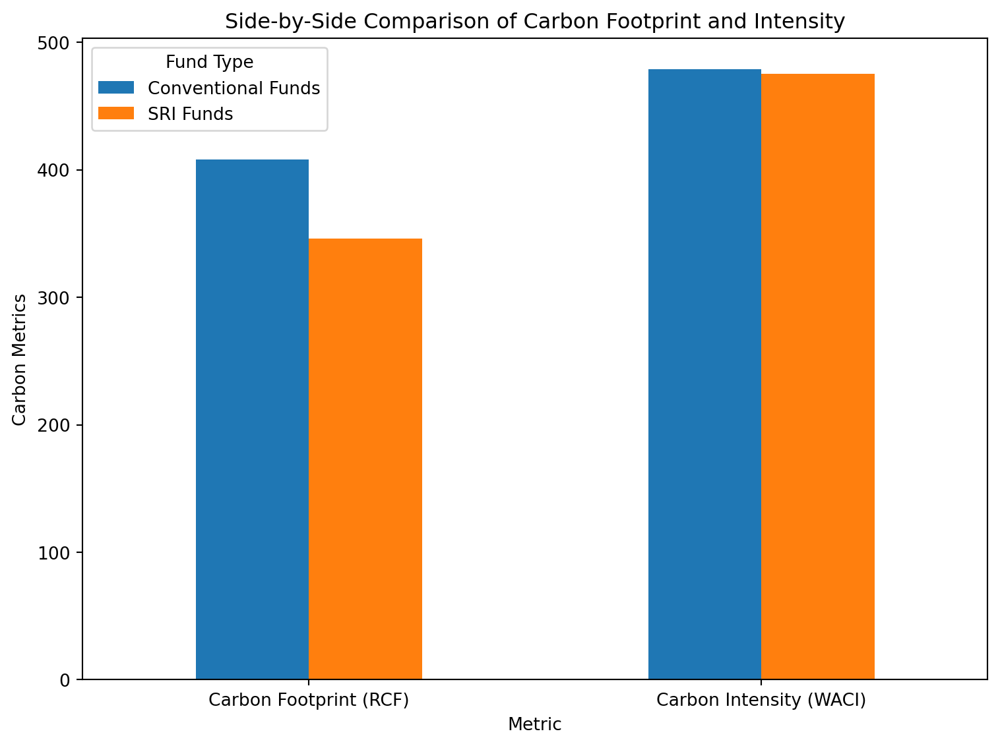
ESG reports are very general and opaque. We need product-level analytics and reporting to be able to compare products.
Yu (2021) ESG is filled with greenwashing. Anon (2023a) several US states are introducing regulation for ESGs to curb greenwashing. Frances Schwartzkopff (2022a) suggests the ESMA and EU has strengthened legislation to counter ESG greenwashing.
Three frameworks for corporates to think about ESG complicance is to position their company on the MEET - EXCEED - LEAD scale based on the size, complexity and available resources of the company.
A meta-review of 136 research articles discovered the following ESG-rating agencies.
esg_rating_agencies_chart()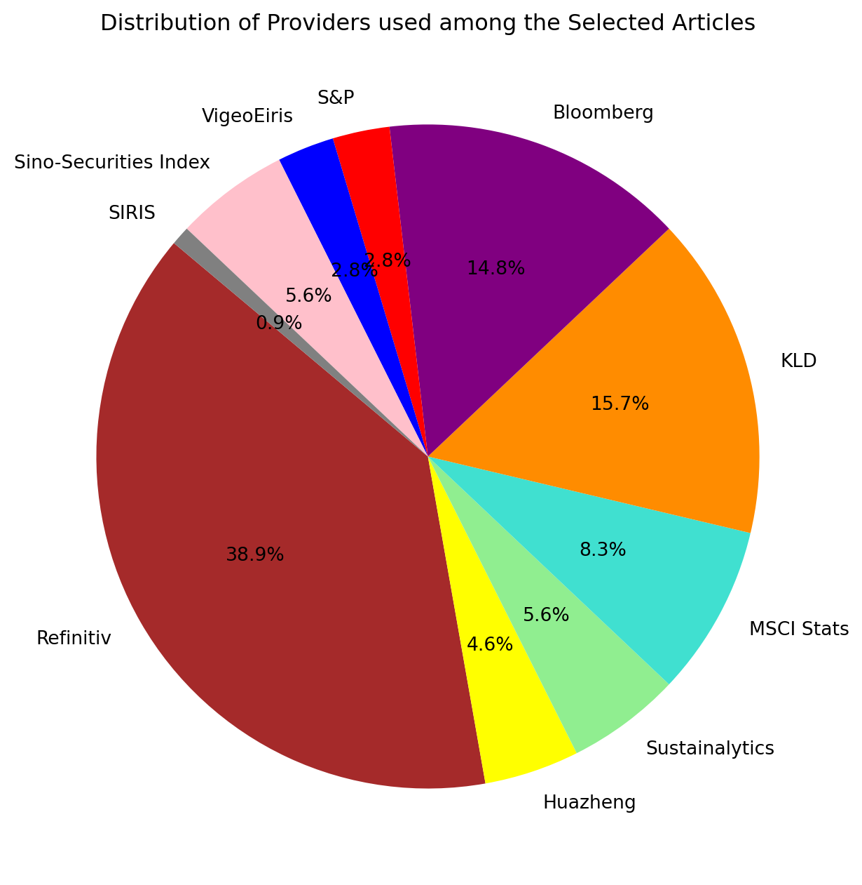
There’s a growing number of companies helping businesses to measure CO2e emissions in their product lifecycle.
Kyle Wiggers (2022) proposes makersite, instant sustainability impact from supply chain.
Makersite (n.d.) proposes product sustainability modeling.
Tim Nicolle (2021) “Real-time ESG data is more difficult to greenwash”, “supply chain is a significant source of ESG content”
Automate CO2 calculations realtime:
Indrek Kald (2022): FlowIT automate CO2 counting
“Factory social score”.
People working at the factories can report conditions
Anon (n.d.d): Governance or Corporate Responsibility
How are large corporations responding to the climate crisis?
Lack of leadership. (Capgemini, 2022): “Many business leaders see sustainability as costly obligation rather than investment in the future”.
The CEO of the Swedish clothing producer H&M - one of the largest fast-fashion in the world -, recognizes the potential impact of conscious consumers as a threat (Hoikkala, 2019).
Many large businesses have tried to find solutions by launching climate-focused funding. (Korosec, 2021) reports that Amazon’s 2B USD to a Climate Pledge Fund earmarked to fix climate problems is invested in energy, logistics, and packaging startups, which will reduce material waste. “Good intentions don’t work, mechanisms do,” Amazon’s founder Bezos is quoted as saying in (Clifford, 2022). Walmart is taking a similar approach, having launched a project in 2017 to set CO2 reduction targets in collaboration with its suppliers (Walmart, 2023). These examples underline how money marketed as climate funding by retail conglomerates means focus on reducing operational cost of running their business through automation and material savings.
Large corporations such as Nestle and Coca Cola support the biodiversity law to have a level playing field for business (Greens EFA, 2023).
Anon (2013)
Guidotti (2015)
“Sustainability is important for many reasons including: Environmental Quality – In order to have healthy communities, we need clean air, natural resources, and a nontoxic environment.”
Low, Baum & Sovacool (2022) finds considerable uncertainty exists among experts which CO2 reduction methods among nature-based and technology-based are the most effective.
Pathways to drawdown
| Category | Role | Implication |
|---|---|---|
| Consumer | As a consumer, I can get notified by the app about highlights of poor legislation refuted by science. | |
| Company | ESG alone is not a sufficient metric to prove sustainability of a company and needs to be accompanied by other metrics. | |
| Investor | Anon (2019a): “Investors want to know where their money is going”, says Heike Reichelt, Head of Investor Relations at World Bank. | |
| Implication for design: ESG can’t be trusted. | ||
| This applies to both institutional and increasingly retail investors. Sustainable investing is possible due to consumer demand for greener products and services, and new tools such as ESG for measuring sustainable businesses and assets, as well as advancements in large-scale computational technologies to analyze large amounts of tracking data, comparing performance between different assets. Given these developments, might it be possible to create a practical sustainable investing AI advisor for consumers? | ||
| Sustainability is fragmented. How can billions of people find greener alternatives and build closer relationships with sustainability-focused companies? Greenwashing is widespread, how can we feel trust, honesty, and transparency? A research project for designing a sustainable shopping, savings, and investing companion. | ||
| Greenwashing | Laws against greenwashing | |
| Fintech Like a Robinhood stock symbol page for brands including live ESG metrics and ability to register divestment. Same for crypto can be automated? - People will start to discuss ESG vs price discrepancy? | ||
| hetkel hinna info liigub aga toidu kvaliteedi info ei liigu roheline filter finding good wuality products stock are disconnected from the products companies make | ||
| Accountability | What if we gave consumers the tools to keep companies accountable? | |
| As an interaction design student who cares about the environment, I ask myself how can interaction design contribute to increase sustainability? I make the assumption that investing is inherently “good” for one’s life, in the same way, that doing sports is good, or eating healthy is good. It’s one of the human activities that is required for an improved quality of life as we age - and started investing sooner, rather than later, is best because of the compound interest. Nonetheless, investment also includes higher risk than sports or food. How to communicate the risk effectively while educating the users? | ||
| Airbnb for Investments platform for projects linked to your consumption habits. Can provide better products for you as well as invest in these companies. The consumer can feel closer connection to the businesses they interact with through shared values, leads to participatory design and stakeholder capitalism. Platform to understand investment products. Green crowdfunding already allows people to invest into projects to make new green products, for example from recycled materials. but what about getting involved on a deeper level. Bigger than projects, scalable solutions. Kickstarter has green projects section. Startups vs large businesses. The design of the user interface helps the adoption of a new technology. What is the suitable user interface for millennial green investors? | ||
| If corporate social responsibility (CSR) loyalty programs, driven by points systems are useful, can we go a step further, and create a pathway to enable the consumer to become an investor in the company they like to buy from? Could this strategy provide more meaning for the consumer, leading to higher customer retention, as well as financial returns? | ||
| Where to invest for green impact? Which investment vehicles are the most suitable for green investments? When a person wants to make a sustainable investment, where to put your money if you want to make the world greener? If young people are worried about climate, why are they not investing in green assets? To what extent can interaction design increase market participants’ engagement with sustainability? What are some suitable user interfaces for millennial green investors? Is design relevant to investing decisions? Direct investment AI assistant vs marketplace of existing investment products? But how to measure? Currently, there is no easy way to do it, and the UX of traditional banks is too cumbersome and old-fashioned. | ||
| My research aims to find ways to enable a wider audience to access sustainable investment opportunities. This chapter gives an overview of the current (as of late 2020) sustainable investing landscape as well as future trends related to interaction design and user experience innovations (fig. 4). | ||
| This research is concerned with how billions of people might exclude polluting companies from their lives and elect to support companies that put sustainability in the core of their business instead. Why does it matter? Individual sacrifice is too small to have a meaningful impact. For societal change, we need to pool our resources. | ||
| Accessibility | How can ESG (environment, social, and governance) become accessible to our everyday experience, while avoiding greenwashing? | |
| Loyalty | Loyalty to investment. What are the standard conversations about money and savings that I would traditionally have with a financial advisor, that could be converted into a portable, mobile form, in my pocket every day? | |
| Live more sustainably with 10 minutes per day. | ||
| Saving | Anthropomorphism | |
|
||
|
||
|
Features
| Category | Role | |
| Consumer |
|
|
| Consumer |
|
|
| Consumer | Feature: We need a dashboard of comparable public indicators about each company. | |
| Community | Feature: Make a climate hedge fund with friends | |
| Feature: Sustainable investing product for young people everyday use Crypto, NFT provide everyday excitement trend of young ppl in crypto retail investors without needing to pay bank fees | ||
| AI alert: “The company you’ve purchased from 3x in the past month is owned by Unilevel, which is under investigation for poor labor practices and deforestation”. | ||
| User | Design: Feature: Help me write me investment thesis first. | |
| Governance | Design Implications: show company board membership in the app product view. | |
Social Commerce
(The Influencer Factory, 2021) China is the furthest ahead in social shopping, the Chinese and U.S. market may be mature and growth will come from emerging markets (SEA, Latin-America).
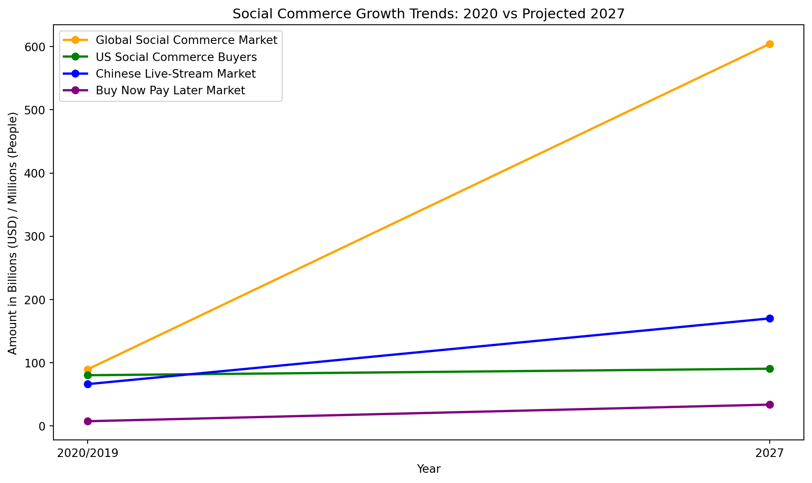